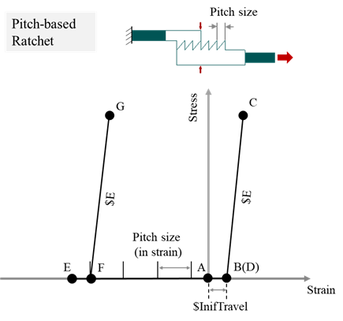
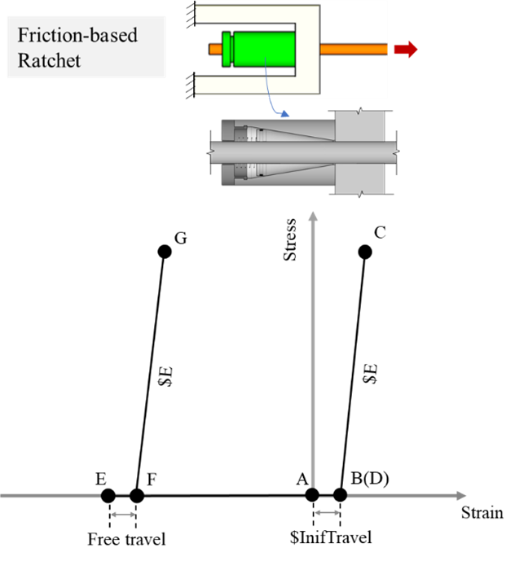

3.1.5.31. Ratchet Material¶
This command is used to construct a Ratchet uniaxial material object, which was developed to model a ratcheting, i.e., tension-only (in terms of motion) behaviour. In other words, the material engaged in tension motion but generates no forces under compressive motion. Usage of the command is outlined below and the required input parameters are provided in Table 1. All fields are required.
uniaxialMaterial Ratchet $matTag $E fTravel_pSize $InitialfTravel $RatType
Table 1 Ratchet material command input parameters.
Command |
Description |
|---|---|
$matTag |
Integer tag identifying material |
$E |
Elastic modulus |
$fTravel_pSize |
Free travel or pitch size (strain) before engaged in tension. |
$InifTravel |
Free travel at the initial stage. A value of 0 indicates the ratchet is initially engaged |
$RatType |
Types of Ratchet. A value of 1 indicates the Ratchet is pitch-based, in which $fTravel_pSize indicates pitch size. A value of 2 indicates the Ratchet is friction-based, in which $fTravel_pSize indicates free travel. |
Case 1: the Ratchet is pitch-based, i.e., $RatType is 1. Figure 1 shows its schematic drawing and stress-strain responses.
{kind=link}
Figure 1 Pitch-based Ratchet material hysteresis
The response progresses via the sequential letters labelled in Figure 1:
The system is initially at rest, before tensile motion begins.
The Initial free travel is reached and the ratchet is engaged. If the ratchet is initially engaged as shown in the schematic drawing, Point B and Point A would coincide.
The applied load is reversed.
The ratchet starts compressive motion with no forces modelled in the system.
The applied load is reversed, and tensile motion begins. Initial tensile motion is not resisted until the ratchet engages at the last pitch-bite point.
Engagement of the ratcheting mechanism occurs at the last pitch-bite point.
Engages under tensile motion.
Case 2: the Ratchet is friction-based, i.e., $RatType is 2. Figure 2 shows its schematic drawing and stress-strain responses.
{kind=link}
Figure 2 Friction-based Ratchet material hysteresis
The response progresses via the sequential letters labelled in Figure 2:
A~D Identical with those in pitch-based Ratchet.
The applied load is reversed, and tensile motion begins. Initial tensile motion is not resisted until the extrusion in the friction interface is sufficient to engage the system. This distance is denoted as Free travel. Differs from the pitch-based Ratchet, in friction-based Ratchets the free travel before engagement is identical at each load-reverse point and does not depend on the pitch position.
Engagement of the ratcheting mechanism occurs.
Engages under tensile motion.
A comparison of the Ratchet material simulated behaviour with experimental behaviour is available in the paper below:
Xiao, Y., Eberhard, M. O., Zhou, Y., Stanton, J. F., Shen, J. (2022). Low-prestressing, self-centering energy dissipative brace. Earthquake Engineering & Structural Dynamics, 51(12), 2837-2857.
Code Developed by: Yi Xiao, Tongji University, China